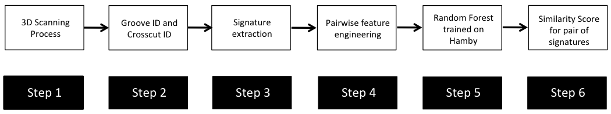
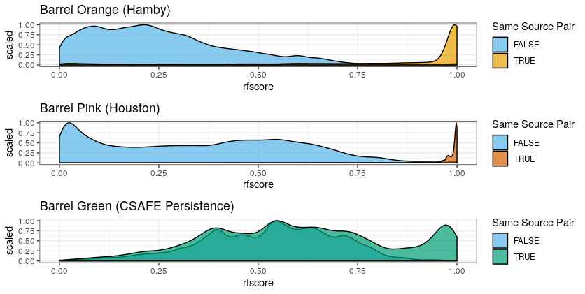

Chapter 3 Project CC: Bullets and Cartridge Cases
For both bullets and cartridge cases we are dealing with several inter-related aspects, that we want to address independently.
Those are:
data collection
computational tools
similarity scores
for bullet lands:
- crosscut identification
- groove location
- curvature removal
- alignment of signatures
- feature extraction
- matching with trained Random Forest
for breech faces
analysis of results
communication of results and methods
3.1 Data Collection
3.1.1 LAPD
All bullets are collected by Srinivasan Rathinam, LAPD.
3.1.1.1 Main study
4 bullets per barrel for 626 Beretta 92 F/FS firearms , ammunition used are 9 mm Luger Winchester 115 grain with a Copper surface.
scans are on Raven.
evaluation: Yawei is going to work through all 626 barrels of knowns to assess similarity scores

Figure 3.1: Results from assessing scans of barrel FAU 1 similarity.

Figure 3.2: Results from assessing scans of barrel FAU 2 similarity.
Why some of the cases failed? (181/626 = 30%)
x3p_crosscut_optimize() failed to find the positions to get cross cut for some lands.

Figure 3.3: Land scan for barrel FAU 3 bullet A land 6.

Figure 3.4: Land scan for barrel FAU 4 bullet C land 5.

Figure 3.5: Land scan for barrel FAU 5 bullet B land 5.
Assess the land-land comparasion and bullet-bullet comparasion
For bullet-bullet comparasion: we use the “sequence average maximum”(SAM), i.e. average ccf of “lines” of land-land comparasions, as the bullet similarity score(currently).
By making use of 92 manually generated comparasion data, we try to produce the KM(known-matches) and KNM(known-non-matches) plot.
For the known mathches, we have totally 626 x 6 = 3756 for the LAPD data, excluding the comparasions for same bullet.
For the known non-matches, we don’t have the data in hand. We need to generate the data in a way. We have totally 626 x 625/2 x 16 = 313000 known non-matches. We can only generate a sample from the data.
We sampled 100 bullet-bullet known non-matches from our 92 cases.

Figure 3.6: KM and KNM
Is the SAM(sequence average maximum) a good choice? Need to do a permutation test.

Figure 3.7: SAM permutation result

Figure 3.8: SAM permutation result among maxmum
Possible dependence structure in land-land comparasions:
Assume beta distributions for the ccf for both known mathces and known non-matches. For the real known match cases, we consider a mixture distribution of two/three beta distribution.

Figure 3.9: KM three components for all data

Figure 3.10: KNM two components for all data

Figure 3.11: common component
Ten-fold-cross validation (no validation yet), check the model estimator sensibility

Figure 3.12: KM ten-fold models for two components

Figure 3.13: KM ten-fold models for three components

Figure 3.14: KNM ten-fold models for one component

Figure 3.15: KNM ten-fold models for two components
Increasing sample size: 1, 2, 6, 12, … number of barrels

Figure 3.16: KM increasing sample models for two components

Figure 3.17: KNM increasing sample models for one components

Figure 3.18: KM increasing sample for first component
More on the weight

Figure 3.19: Prior weight on components
More on one barrel case

Figure 3.20: KM one barrel model for the frist ten barrels
Some conclusions from current plots:
- Generally, the fits are stable in both ten-fold-cross validation and increasing sample cases
- In ten-fold model, group8 model behaves a little different from others when in three components case
- In increasing sample models, the one barrel model is not stable, but the one in our case is still a rarare case
- The three components model for KM is less stable than two components one especially in small sample cases
- Two components model for KNM is not stable in small sample case(in terms of weight)

Figure 3.21: ROC-cv-models

Figure 3.22: ROC-different-size-models

Figure 3.23: ROC-one-barrel

Figure 3.24: KM-table

Figure 3.25: KNM-table
3.1.1.2 follow-up study
4 bullets per barrel for 96 of the original 626 Beretta firearms using different ammunition
bullets are being scanned
3.1.2 Hamby Sets
Scans for Hamby Sets 10, 36, 44, and 224
Scans for 3 replicates of clones for Hamby 224
3.1.3 Houston Tests
contact: Melissa Nally, Houston FSI
3.1.3.1 Pre-study
3 kits with 23 bullets each

Figure 3.26: Bullet-to-bullet similarity scores for questioned bullets (y-axis) compared to all other bullets of the test set (x-axis).
evaluation included in submission to JFI
3.1.3.2 Study
4 kits with 20 bullets each
scans done, evaluation finished, some scans of doubtful quality
3.1.4 Houston Persistence
contact: Melissa Nally, Houston FSI
8 barrels with 40 fired bullets each
3.1.5 St Louis persistence
contact: Steve Kramer, St Louis PD
2 barrels with 192 fired bullets each (2 bullets collected every 25 shots)
3.1.6 DFSC Cartridge cases
Breech face data for knowns are scanned and available on a private github repository
evaluation
3.2 Computational Tools
3.2.1 x3ptools
x3ptools is an R package for working with files in x3p format. x3p is an ISO standard for describing 3d topographic surface measurements.
x3ptools is available on CRAN, i.e. can be installed with the command install.packages("x3ptools"). The development version is available from github. Installation instructions and basic usage can be found at https://heike.github.io/x3ptools/
3.2.2 bulletxtrctr
bulletxtrctr is a developmental R package available from github (see https://heike.github.io/bulletxtrctr/) that allows an assessment of similarity scores using the data extraction pipeline described in Hare, Hofmann, and Carriquiry (2016).
3.2.3 grooveFinder
grooveFinder is a developmental R package providing different methods for identifying the location of grooves in scans of bullets.
Installation instructions and some basic usage can be found at https://heike.github.io/grooveFinder/
3.3 Similarity Scores
3.3.1 Bullet Lands
3.3.1.1 Approaches to identify groove locations
3.3.1.1.1 Hough Transform Method for Identifying Grooves
Charlotte 9/5/19 Update: State semester goals and iron out inconsistencies with 2-d and 3-d visualizations due to unit changes.
Current Goals:
- Iron-out issues with consistency of units with get_hough_grooves. I believe there are some issues translating from the 2-d visualization to the 3-d visualization that might have to do with inconsistent unit inputs? For Example

Figure 3.27: 2-dimensional visualization of example bullet br411 with .999 strength threshold

Figure 3.28: 3-dimensional visualization of example bullet br411 with .999 strength threshold
So either somethin is wrong with get_mask_hough or something is funky with the units.
Also need to think of including a sort of rounding component where lines with slopes that are practically infinite can be viewed as a vertical line
Compare Hough results with manual identification using score calculations from Kiegan.
Write up results in Hough Groove Paper (It’s coming I promise)
- Create graphical images to explain line selection method
- Include 2-d and 3-d visualizations of Hough groove area identifications
- Include crosscut visualization and comparison in results
Charlotte update 09/12/19:
This week I have been working on obtaining some results for the Phoenix set on Sunny.
As a minor update the unit issues in
get_mask_hough() are resolved ( I think). Below
is an example of a nice image that has been generated using masks.

Figure 3.29: Phoenix Gun1 A-9 B1 Land 4 generated at strength threshold of 0.99, initially did not generate estimates at the 0.999 or 0.995 level
However the mask is only as good as the Hough estimates that supports it as shown here (less nice).

Figure 3.30: Phoenix Gun1 F-6 B2 Land 5 generated at strength threshold of 0.9, initially did not generate estimates at the 0.999 or 0.995, or 0.99 level
Hough crosscut predictions for the Phoenix dataset are now uploaded to the bulletQuality Github in the“results” folder and contains Hough groove estimates at the following five strength levels: 0.999, 0.995, 0.99, 0.95, 0.9. The source and the crosscut estimate are also included in the dataset.
Here are some preliminary results of using Kiegan’s area of misidentification method (thanks Kiegan!) on Hough groove estimates at the strength threshold of 0.999 in comparison to the BCP and Lasso method.

Figure 3.31: Left-hand groove area of misidentification log-transformed scores for BCP, Lasso, and Hough

Figure 3.32: Right-hand groove area of misidentification log-transformed scores for BCP, Lasso, and Hough
These scoresare log transformed to show better separation but it’s very clear that for the left groove both Lasso and BCP are out performing the Hough method in correctly identifying grooves. For the righthand side, scores tend to be more similar however once again, the Lasso method seems to bo the best job since it has a larger density of low scores and minimizes high score misidenfitications.
For improvement before next week, I will investigate why there are 47 missing Hough
predictions resulting in a score of 0 in these results and change the parameters in the
get_grooves_hough() function to try and generate estimates for some of those missing values.
Charlotte update 09/19/2019:
This week we are trying to think of a new way for selecting Hough lines for bullet estimates. The previous method for selecting Hough lines was to find lines with x-intercepts at the top and bottom of the lands closest to the lower and upper one sixth of the bullet lands. However this process was highly dependent on score thresholding from the Hough transform which is frustrating when running a large number of bullets since if the right score threshold was not achieved, no result would be produced. So right now I’m working on a way of selecting Hough lines from the normalized Hough scores.
To obtain a normalized Hough score I take the x-intercepts of each estimated Hough line generate and find the distance between the x-intercept at the top and the bottom of the land. This should give me the max possible score for each Hough line, rather than calculating based on theta. Then I take the Hough score and divide by this maximum to normalize scores between 0 and 1. Right now I am working on visualizing some of these results but my code is buggy because I’m getting negative values when I try to visualize the process using masks when I shouldn’t. Here is an example of a bullet land using the old and new method. Really similar results although it would appear that the new resut places the Hough transform lines further in to interior of the land than the old results. So that’s promising?

Figure 3.33: Phoenix Gun 1-A9 Bullet 3 Land 1 visualized using current Hough process message

Figure 3.34: Phoenix Gun 1-A9 Bullet 3 Land 1 visualized using new Hough process message
Charlotte Update 09/26/2019:
This week is focused on fixing the normalization of the scores for Hough grooves. So that the process can be automatic rather than rely on manual input for the score threshold.
Instead of dividing by the geometric distance between the top and bottom intercepts of the bullet image. Now we only consider Hough lines that actually go through both the top and bottom of the land, therefore we can normalize each score by dividing the original hough score by the height of the image and multiplied by the cosine of theta which accounts for the difference in length of lines with differing angles. As far as selecting normalized scores from every score possible I found that there is really no visual difference between selecting the highest normalized Hough score and the other top five.

Figure 3.35: Phoenix Gun 1-A9 Land 4 visualized using new Hough process index one

Figure 3.36: Phoenix Gun 1-A9 Land 4 visualized using new Hough process index ten

Figure 3.37: Phoenix Gun 1-A9 Land 4 visualized using new Hough process index twenty
So for now we will continue to select the highest normalized Hough score to use as our bullet land estimates. After fixing the parameterization of the Hough scores and how we normalize Hough scores, the 3-dimensional images appear to have improved! Which is great news since no thresholding was necessary.

Figure 3.38: Hamby Bullet 1 Land 1 visualized using new Hough process
Still we run into the problem that our masks are only as good as our estimates, however even this terrible bullet land appears to have grooves identified somewhat well.

Figure 3.39: Hamby Bullet 1 Land 4 visualized using new Hough process
A comparison between the two methods finds that generally the new Hough process out-competes the old one on nearly every bullet land in the Hamby 252 demo set.

Figure 3.40: Crosscut Results Hamby 252 Demo Set Comparison between old and new methods
Charlotte Update 10/3/2019:
The get_grooves_hough function has changed since last week, it previously slopes were calculated in x which is numerically less stable than a slope in y so for example when we were using the old slopes we had the possibility of dividing by zero which is not good. Changing to the new slope helps eliminate that likelihood. Other than that I am working on writing a grooveFinder vignette. I will be discussing every step of the Hough algorithm at length then demonstrating the function itself on the Hamby44 demo set.
Charlotte Update 10/3/2019:
Finished up the application section of the Hough grooves vignette, need to fill in a few demonstration images that explane how we calculate normalized scores using geometry.
Now working on: - Finish visualization portion for the vignette - Expand testing for get_grooves_hough
Charlotte Update 10/17/2019:
Finally finished up with the vignette, but need to finish one or two more explanation diagrams before first-pass is complete. Having trouble figuring out what the results section should really look like.
Need to finish tests for get_grooves_hough.
Charlotte Update 10/22/2019: For this weeks spotlight I will focus on motivating the reasoning behind the Hough project, a demonstration of mechanics or how the function actually works and maybe a few results.
3.3.1.1.2 Project Motivation
One of the main objectives of the bullet project is to develop algorithms that can match bullet lands based on a set of features taken from a signature of a single bullet crosscut. In order to to extract these vital signatures we need to fit a robust loess to our crosscut data to remove the curvature inherent in each bullet land. However, there-in lies a problem. If the groove engraved areas are included in our fitting of the robust loess we observe boundary effects that negatively impact the accuracy of the extracted signature.
So a key goal in the bullet project is to be able to automatically identify the location of bullet grooves. Other projects in pursuit of this goal use a statistical approach to calculating the location of bullet grooves over a single crosscut. However, we are given an entire land scan in the form of an x3p file. By using low-level image algorithms like the Hough transform, we can almost make full utility of the x3p scan by estimating bullet grooves over the entire bullet land image instead of a single crosscut.
3.3.1.1.3 Hough Transform Mechanics
Hough transforms are essentially a computer algorithm for detecting imperfect incidences of a known class of shapes in an image by finding aligned points. In our case, grooves are typically linear so we want the Hough transform to detect straight lines. Anyone who has looked at a bullet scan knows that the striae are also straight lines, so some image pre-processing is necessary for the algorithm to be able to distinguish between weaker appearing striae and the prominent groove features. Traditionally a gaussian blur and Canny Edge detection are performed to reduce the noise found in a gradient image. However, we have found that using Canny Edge detection is pretty much unnecessary for identifying grooves.

Figure 3.41: Bullet land with Canny Edge detection

Figure 3.42: Same bullet land but only with gradient magnitude thresholding at the 99th percentile
Utilizing the cleaned up edges in our bullet image, the Hough transform cycles through every pixel of an image in an attempt to find aligned points on an edge. To do so, the Hough transform operates by transforming each point in a line into a different feature space.

Figure 3.43: Diagram of detecting aligned points by looking for intersections in the feature space. Source: ‘How Hough Transform Works’- Thales Sehn Körting
Unfortunately, vertical lines have slopes in x that tend to infinity, which would make storing the results of the Hough transform impossible due to memory storage issues. So the Hough transform parameterizes lines in what is known as the Hessian Normal Form. \[ \rho = x\ \cos(\theta) \ + \ y\ \sin(\theta)\]

Figure 3.44: Hessian Normal Form of simple line over bullet image

Figure 3.45: Gif of a Hough Transform Algorithm at work. Source: ‘How Hough Transform Works’ - Thales Sehn Körting
So the output of the Hough algorithm (in this package we utilize the hough_lines function from the imager package) is thus a set of \(\rho\) and \(\theta\) that define the detected lines but also a “score” which indicates the number of points that the algorithm detected for this particular edge estimation. This allows us to use thresholding and other means to select only the strongest candidates as groove estimates. Previous iterations of the get_hough_grooves function used a user-specified score thresholding level which made results highly variable dependent on the inputted score threshold. Now we use a normalized “score” to select the strongest line detected in the image. Once our lines for the left-hand and right-hand grooves are selected, we choose to output two functions that define our estimated grooves. To compute the parameters of our Hough line, we first find the location of where each line first intersects the bullet (“xtop”) then we use our known “xtop” and our known “height” of the image to calculate “xbottom” using good ol’ SOH CAH TOA.

Figure 3.46: Geometrically Calculating ‘xbottom’
The reason for calculating the top and bottom intersection points is so that we can derive a slope for our groove estimate in y. When we learned how to calculate slope in grade school, we were always taught to use “rise over run” which is slope in x. However when the lines are vertical, we are essentially dividing the height of our bullet land by 0 to obtain a slope. So it is numerically more stable to define the slope as \(\frac{(\text{xtop - xbottom})}{\text{height}}\) so vertical lines simply have a slope of 0.
3.3.1.1.4 Implementation
As far as implementation goes, the function get_grooves_hough takes care of the edge detection, Hough algorithm, and line selection. Similar to other methods used for detecting lines, the get_grooves_hough function has an adjust parameter that allows the user to specify how far inward they want to “nudge” the groove estimates. The default for the Hough transform is set at 10, however this needs to be experimented with for a variety of different bullets to find appropriate adjust levels.
Figure 3.47: 3d visualization of example bullet
3.3.1.1.5 What’s Next?
Fiddling with adjusts and how it affects score. To find an optimal adjust for the Phoenix set, I calculate the default Hough groove estimates then find what the estimate would be for a series of adjusts. Naively I have defined a new parameter called “difference_left” and “difference_right” which is simply the difference between the manually identified groove location at an optimized crosscut and our Hough estimate at a particular adjust level. For now, I have defined any negative values to indicate that the Hough estimate is further from the center than the identified truth. So we want to minimize these negative difference to better get rid of boundary effects.

Figure 3.48: Difference between the left hand Hough estimate and the truth at various adjusts

Figure 3.49: Difference between the righ hand Hough estimate and the truth at various adjusts
3.3.1.1.6 LASSO Method
A paper is in preparation for submission to Forensic Science International describing this method (get_grooves_lassofull in grooveFinder), as well as the Bayesian changepoint method (get_grooves_bcp).
3.3.1.1.7 Robust LOESS Method
A paper submitted to the Journal of Forensic Science is waiting for peer review response to the first round of revisions.
3.3.1.2 Bullet Land Comparisons Pipeline
Most data analysis processes can be thought of as a data analysis “pipeline”. This process can involve data collection, decisions about data cleaning, data transformation or reduction, and feature engineering. For example, consider the general process below:

In the case of the bullet project, we have a pipeline which starts with having two physical bullet LEAs and ends with a quantitative result, a random forest similarity score. Our pipeline could be described (roughly) as something like this:

To make this a little easier to see, we can look at how a 3D scan is processed into a 2D signature:

Now, something important to consider is whether each of these “data decisions” has an impact on the quantitative result (here, a similarity score between two LEA signatures). Consider a simple set of decisions we could make in our bullet pipeline:
If we have a pair of signatures, we could theoretically end up with 16 different similarity scores depending on the decisions we make at each point. That is also assuming that both signatures were processed in the same way at each point.
This year, I’ll be studying our bullet land “pipeline” here at CSAFE, as well as pipelines that are a little different than ours (e.g., Chu et al. (2010)). There are a few major goals I am working towards:
- Quantifying the uncertainty of our RF similarity scores based on data decisions
- Comparing reproducibility/robustness of differing bullet analysis approaches
- Reproducibility/robustness of different approaches when we consider data COLLECTION.
The code in bulletxtrctr is already really well set up as a data “pipeline”, so now we are conceptualizing the best way to wrap the pipeline and keep track of what decisions are made along the way.
We are using few resources to conceptualize and plan the pipeline work, including:
tidymodels, a part of thetidyversefocused on design matrices and reproducibility of modelingdrake, an R package by Will Landau which helps cache information and keep track of steps in a pipeline- We are investigating how well this scales to ``big data".
It does not scale well.
- We are investigating how well this scales to ``big data".
- Some pipeline/plumbing papers by Hadley Wickham, Heike Hofmann, Dianne Cook, and others
- These focus on interactive graphics and updating data/plotting objects with interactivity
- These focus on interactive graphics and updating data/plotting objects with interactivity
- All of the existing tools in the “bulletverse”;
x3ptools,bulletxtrctr,grooveFinder, etc.
Earlier this year, we designed and collected a bullet scanning variability study of 9 bullets. I’m working on formally modeling the variability at the signature level, taking two major approaches:
- Subsampling and assuming independence;
- Directly modeling out the mean structure
- Ignoring peak/valley dependence
- Using time series/spatial dependence modeling
- Using a Bayesian shrinkage prior (w/help from Amy!)
Results for Method 1, the subsampling, looks something like this:

We are also investigating the variability of random forest scores, using pairs of signatures. The current process for taking a set of signatures and completing pairwise comparisons on each of them actually completes many comparisons twice, which has two impacts:
- It takes up more computational time and memory than we really need it to
- It has the potential to make our variance component estimates inaccurate - we double-count a bunch of comparisons!
Over the summer I made a function to “fix” this, to address the estimation problem in my variability study. The bulletxtrctr pipeline calls for using expand.grid. My new function compares pairs by creating a pairing_id variable and ensuring no pairing_id is duplicated. This is the resulting set of comparisons:

The changes to our results are minor, but it is an important detail when modeling things.
Two papers in progress! Groove ID paper #1 is waiting for reviewer scores, Groove ID paper #2 is waiting for advisor comments.
Sometimes, data collection goes awry…

I am in the process of documenting all the data issues and double-checking everything. We are adding more operators (and another set of bullets) to our variability study!

I am in a mad dash to get more book content to Alicia and then reviewers soon.
3.3.2 Cartridge Cases
3.3.2.1 Congruent Matching Cells (CMC) algorithm for comparing cartridge case breech face impressions
Joe 9/5/19 Update: Explanation of missing value problem when calculating cross-correlations and some attempted fixes.
Dealing with missing values in the x3p scans continues to be an issue. The Fast Fourier Transform method for calculating cross-correlation can’t handle missing data in an image, so we’ve attempted a few “fixes” that haven’t necessarily turned out as well as expected. One idea we had was to replace the NA values in a cell with the average pixel value. However, this is artificially introducing a signal where before there was none. This can (and demonstrably has) led to inflated/incorrect correlations between cells that shouldn’t have much at all in common. Unfortunately, this may be the only solution if we still wish to adhere to the CMC algorithm as described in Song et al. (2015). One improvement that I’ve implemented is to “crop out” the rows and columns of an image that only contain NAs. This at least means that we’ve weakened the strength of the artificial signal relative to the breechface’s signal.
Below is a series of images that illustrate how we might compare a cell in one image to a region of another image.

Figure 3.50: Comparing a cell in image 1 to a larger region in image 2. We wish to find the translations of the image 1 cell that yield the highest correlation within the image 2 region.
For the sake of an example, let’s focus on the blue outlined cell in image 1. Our goal is to use the image 1 cell to “search” a corresponding larger region in image 2 for the horizontal/vertical translations needed to produce the highest correlation. Below is a zoomed-in version of the blue outlined image 1 cell on the left and the larger image 2 region (approximately: I made the gridded image above by-hand outside of R while the images below are from R). The image 1 cell may look larger than the image 2 region, but we can see from the axes that the image 2 region is indeed larger. Any white pixels in the two images are NA values that need to be dealt with in some way before we can use FFTs to calculate the cross-correlation.


Figure 3.51: (Left) A cell from image 1. (Right) A region from image 2 centered in the same location as the image 1 cell, yet quadruple the area.
As already discussed above, one “solution” is to replace the NA values with the average pixel value of each image. However, to avoid creating a stronger artificial signal than necessary, we can crop-out the NA rows and columns from the two images above. Below is the cropped version of the two images. The cropping doesn’t produce signficantly different images in this case, but you could imagine other examples in which a cell has captured only small amount of breechface in the corner. Such examples are fairly common and cropping signficantly changes the resulting correlation values.


Figure 3.52: The same images as above after cropping NA rows/columns.
The last step before calculating correlation for these cells is to replace the remaining NAs with the average pixel value. This is shown below.


Figure 3.53: The NA-cropped images with remaining NAs replaced with the image’s average pixel values.
The cross-correlation is then calculated between these two images via a standard fast fourier transform process (see Cross-Correlation Theorem). The benefit of using such a process is that (as the name suggests) it’s faster than calculating the raw correlation between the two images. Also, the translations that produce the highest correlation between the image 1 cell and the image 2 region fall out of the calculation for free.
This pre-processing/cross-correlation calculation procedure is repeated for every cell in image 1 that contains breech face impression. Because it is not valid to assume that the two images are rotationally aligned by default, we perform the same procedure repeatedly while rotating image 2. Currently, we perform a “rough” grid search of \(\theta \in [-177.5,180]\) by increments of \(2.5^{\circ}\). Theoretically, the final results tell us how we need to horizontally/vertically translate and rotate the two images to be correctly aligned.3.3.2.2 Congruent Matching Tori: a promising solution to the missing value problem
Joe 9/5/19 Update (cont’d): A brief introduction to a congruent matching “tori” method that may provide a better solution to the missing value problem.
As discussed above, dealing with missing values is provign to be a pain. The good news is that the currently-implemented CMC as described above yields results very similar to those published in Song et al. (2015) that originally describes that CMC algorithm. While our results seem to agree with currently published results, it would be nice if we could avoid needing to artifically replace missing values. We can do so if, rather than breaking up the circular breech face impression scans into disjoint squares, we break up the breech face impression into donut-shaped regions containing only breech face impression. Below is an example of such a toroidal region.


Figure 3.54: (Left) The original breech face impression scan image. (Right) A donut-shaped region cut out of the original image.
Joe 9/12/19 Update: Explanation of some of the pre-processing steps needed to make the CMC work as described in Tong et al. (2015)
Before carving out toroidal regions from the two images we wish to compare, a fair amount of pre-processing needs to be completed. For example, the scans we work with begin with a considerable amount of auxiliary information, for example the firing pin impression, that we don’t want to use in our comparisons. This isn’t to say that firing pin impressions aren’t useful to determine a match between two cartridge cases. In fact there is quite a lot of published research on how to compare two firing pin impressions. Rather, it is common practice to compare breech face impressions and firing pin impressions separately since it is difficult to scan both simultaneously. Thus, there are regions of a breech face impression scan that we want to remove so that the breech face impressions are more easily comparable. Below is an example of two breech face impression scans before processing.


Figure 3.55: Two cartridge case scans before pre-processing.
There are a variety of techniques to segment an image into various parts. In image processing, common techniques are the Canny edge detector, which identifies edges of shapes in an image using image gradient techniques, and the Hough Transform, which can detect a variety of geometrical shapes in an image. The Hough Transform is what is used to segment the cartridge case images used in the previous section. However, we’ve found that the use of a Hough Transform doesn’t extract the “breech face signal” from an image as other techniques. Namely, the breech face can be effectively extracted using the RANSAC (Random sample consensus) method that iteratively fits a plane to a set of data until it settles upon a consensus-based “bulk” of the data. In the case of these cartridge case scans, the bulk of the data should predominantely be distributed around the mode height value. That is, the breech face impression. Once we’ve fit this plane to the breech face impression, we can extract the residuals of the fit to better accentuate the markings left in the cartridge case base by a firearm’s breech face. Below is an example of the residuals left after fitting a RANSAC plane to two cartridge case scans above. In the example below, we grab any residuals less than 20 microns in magnitude.


Figure 3.56: Residual values of a RANSAC plane fit to the two cartridge case scans shown above.
Although these two images are of two different cartridge cases, you can hopefully see that one looks very much like a rotated version of the other. These two cartridge case scans are in fact fired from the same gun (known matches), so it’s a good thing that they look so similar. We’ve now removed quite a bit of the unwanted regions of the original scans. However, there are still some areas of the image (e.g., the faint circular region of pixels in the center of the breech face scan) that just so happened to be close to the fitted plane and thus were brought along in the residual extraction. There are a few ways that we can clean up these last few areas. One is to use two Hough Transforms to detect the inner and outer circles of the breech face impression and filter out any pixels outside of the region between these two circles. The biggest issue with using a Hough Transform is that it must be given the radius of the circle that it is to search for in the image as an argument. That is, we need to know the radius of the breech face impression that we haven’t yet identified in order to identify the breech face impression. Instead, we can dilate/erode (or vice-versa) the pixels in the image to remove the remaining “speckle” in the image. Below is an example of of the breech face impressions cleaned via a dilation/erosion procedure.


Figure 3.57: The selected breech face impressions based on dilation and erosion.
The final step in the pre-processing is to align the two images in some consistent fashion. Luckily, the firing pin impression ring that’s left after performing the above dilation/erosion provides us with some idea of how to align the breech face impressions. The location of the firing ring impression in the breech face impression provides us with an indicator of where the cartridge case was located relative to the firing pin when it was sitting in the barrel. So aligning two cartridge cases so that their firing pin impression rings align will ensure that, at the very least, the breech face impression left on the cartridge case is horizontally/vertically aligned if not rotationally aligned.
Joe 9/18/19 Update: Continuation of pre-process explanation with a discussion on how we can automatically detect the firing pin impression radius in an image.
To automatically detect the radius of a given breech face impression, we can count the number of non-NA pixels in each row. If we were to imagine scanning down an image and counting the number of non-NA pixels in each row, then this count would obviously start to increase the moment we hit the top of the breech face impression. Because the breech face impressions are circular, the count would continue to increase the further down the image we scan. That is, until we hit the firing pin impression circle. At this point, because the firing pin impression circle consists of NAs, we would expect the non-NA pixel count to dip. This increasing followed by decreasing behavior in the non-NA pixel count constitutes a local maximum. We can use this local maximum of the non-NA pixel count to identify the beginning of the firing pin impression circle. Similarly, we would expect the non-NA pixel count to reach another local maximum once we hit the end of the firing pin impression circle. It’s then a simple subtraction of the two row indices containing these local maxima to determine an estimate for the diameter of the firing pin impression circle.
We can see below an example of the non-NA pixel row sums plotted against the row indices (starting from the top of the image and moving down). You can hopefully see that the raw row sums are rather “noisy”. As such, we can pass a moving average smoother over the row sum values so that the local maxima are easier to identify. This may not be the most robust way to determine the local maxima. I hope to investigate the use of b-splines fit over the row sum values to see if these would be more effective at finding local maxima

Figure 3.58: Non-NA pixel row counts and moving average-smoothed row count values plotted against row index.
However, because firing pin impression circles have somewhat perforated edges, performing one pass through the image may not yield a particularly accurate estimate. As such, we can repeat the process of finding the distance between local maxima for both the row and column non-NA pixel counts. We can also rotate the image by a few degrees and perform the same process. I am currently rotating the image 0, 15, 30, 45, 60, and 75 degrees and calculating row and column diameter estimates per rotation. Obviously we can apply whatever aggregation function we desire to these estimates to determine a final estimate. Below we see what the Hough Transform selects as the breech face for 4 different radii values. In particular, for circles of radius 210, 213, 216, and 219.

Figure 3.59: Hough Transform selected circles (red) of radius (1) 210, (2) 213, (3) 216, and (4) 219.
Joe 9/25/18 Update: Dilation and erosion of the breech face impression image seems to be fairly effective, but require some parameter tuning based on the firing pin impression we’re considering (e.g., effective erosion in one image may have a different, adverse effect in another image). The watershed algorithm appears to be a promising alternative to selecting the breech face impression out of an image containing extra “minutiae”.
When trying to select the breech face impression out of an image such as the one below (this is a slice of the original scan based on the RANSAC method-selected breech face impression z-value), we’re really just interesting in obtaining a yes/no answer for each pixel to the question: “Are you a part of the breech face impression?” As such, rather than looking at the considering the raw pixel values, we can binarize the image to a 1/0 (equivalently, non-NA/NA) pixel representation. Such a representation is below.

Figure 3.60: (Left) Residual values of a RANSAC plane fit to a cartridge case scan. (Right) Binarized non-NA/NA image for segmentation.
Using this “indicator image”, the beginning/end of the breech face impression should be much more obvious to, say, a Canny edge detector. Below is the output of such a Canny edge detector.

Figure 3.61: The edges of the binarized image above via a Canny edge detector.
From here, we can use a Watershed image segmentation procedure to identify various regions within this image. The Watershed algorithm needs to be given a set of pixel locations that the user believes to be within distinct regions of the image. With these “seed” pixels, the algorithm then searches neighboring pixels and attempts to identify them as within/without the same region. Almost as if a water source turned on at the given seed pixel and water began to spread to as many neighboring pixels as it could. The water should “stop” at the black lines in the image above, thus defining the boundary of a seed pixel’s region. An example of the above image post-segmentation is given below. The 5 seed pixels I used were the 4 corners and center of the image. As we can, the watershed algorithm “overflowed” into the breech face impression, but segmented the firing pin impression circle from the rest of the image. Because most of the minutiae that we want to remove is in within this firing pin impression circle, this is not a problem for our purposes. With 5 seed images, there are technically 5 segments represented in the image below (although it’s hard to see where the outer segments begin/end). So as shown below, we can just binarize the segments as being a part of the firing pin impression circle or not.


Figure 3.62: (Left) Watershed segmentation of the Canny edge image above. (Right) The firing pin impression circle binarization of the Watershed segmentation image.
Finally, now that we’ve identified where the firing pin impression circle is in the original image, we can simply replace any pixel values within this circle with NAs. The final filtered image is shown below.

Figure 3.63: Final filtered image.
Joe 10/3/18 Update: Determined a fairly computationally intensive yet (seemingly) effective way to find the firing pin impression circle in an image using a grid search of possible radius values. I will now start putting together a package for easy access. I’m not yet sure what to call the package, so any ideas are welcomed
We can find a rough estimate for the firing pin radius estimate using a variety of methods. The one that I’ve found to be fairly consistent in the few examples I’ve worked with (detailed in the in the 9/18/19 update) is by counting the number of non-NA pixels in each row/column of the image and identifying the distance between the two largest local maxima in this non-NA count sequence. We can pass a grid of radius values centered on this estimate to a Hough Transform and determine which radius picks out the firing pin impression circle most effectively. The difficulty is in how we quantify “effective” using the output of the Hough Transform. Below you can see the original image including the “minutiae” within the firing pin impression circle that we hope to filter out. You can also see the result of filtering out the firing pin impression circle based on the original radius estimate (210 pixels) obtained from the “local maxima” method.

Figure 3.64: (Left) Original breech face impression image. (Right) The breech face impression image after filtering based on a Hough Transform-selected circle of radius 210 pixels.
As already discussed, we can test a variety of radius values around the 210 estimate to determine which is best. Below is a gif animating the result of filtering based on a Hough Transform for radius values ranging from 190 to 230. Although a radius of 210 does a decent job of filtering out the minutiae, a slightly smaller radius may be preferred as larger circles tend to cut into the breech face impression. We obviously want to retain as much of the breech face impression as possible for our later analysis.

Figure 3.65: Gif showing the result of filtering based on Hough Transform circles of various radii.
Using the output of the Hough Transform-selected circles shown above we would like to determine an optimal radius with which to filter out the firing pin impression circle. I explored a few ways of quantifying how “effective” a given radius is at filtering out the firing pin impression minutiae while simulataneously retaining as much of the breech face impression surface as possible. For example, it seemed logical to me to count the number of non-NA pixels we would be throwing out if we filtered based on a particular radius value. As you can see from the gif above, larger radii end up chewing into the breech face impression surface while smaller radii appear to sort of bounce around inside of the firing pin impression circle. We may be able to look at the count of filtered non-NA pixel values for each radius and determine a threshold in which the circles become large enough to start chewing into the breech face impression. Unfortunately, that is not the case. You can see from the plot below on the left that the number of filtered non-NA pixels increased fairly steadily. There isn’t an obvious location along the curve signalling when the circles are getting to be too large (the differences between successive counts are also shown). Since that metric didn’t end up being fruitful, I had to explore alternatives. One alternative that isn’t obvious from just visualizing which pixels are filtered by each radius is called the “Hough score” which essentially quantifies how confident the Hough Transform is that it indeed found the circle that it was told to find in the image. The plot on the right below shows the top Hough scores for each radius value. We can see that there is some variability depending on the radius value. However, there are a range of radius values starting at 210 in which the Hough Transform is consistently rather confident in its circle detection. In fact, we can see from the gif above that radius values between 201 and 206 indeed do a good job of filtering out the firing pin impression circle. Currently, I am basing my final firing pin radius estimate on the radius value in the middle of the longest-running sequence of high-confidence radius values. In both example breech face impressions that I’ve been working with (same type, fired from the same firearm), this final estimate ended up being 203. This is obviously promising, but I would like to spend time to verify that my current method is generalizable to other cartridge case scans.

Figure 3.66: (Left) The number of non-NA pixels filtered out by the Hough Transform-selected circles for different radius values. (Right) The Hough score curve used to determine the firing pin radius estimate.
Joe 10/10/18 Update: Discuss how the algorithm generalizes to different pairs of cartridge cases. Based on a sample of 5 known-match pairs, it appears that the algorithm does do a good job of deciding on a rotation value to make one breech face impression match up well with the other.
Now that the skeleton of the algorithm has, for the most part, been fleshed-out, we can finally start testing it on different pairs of breech face impressions.
For the sake of an example, I have 5 known-match breech face impressions shown below. In the state shown, the scans have been pre-processed to the point that we can visualy see when a pair matches. Hopefully, the scans should look to you as if one is just a rotated version of the other.


One iteration of the CMC algorithm was already discussed in-detail in the 9/5/19 Update above, so I won’t go into detail about that here (I’m saving it for my Spotlight in November). Instead, we can see a gif that shows which cells from image A and image B we compare when calculating the cross-correlation. Recall that the image A cells are 100x100 and image B cells are 200x200, which is why the cells on the right appear to cover more of the breech face impression than the cells on the left.


Figure 3.67: (Left) 100x100 cells from Image A. (Right) 200x200 cells from Image B.
As we can clearly see from the 5 pairs above, we need to perform rotations to properly align one with the other. We perform the cross-correlation calculation for 43 different rotation angles (of image B) to determine which rotation angle yields the highest correlation (\(\theta \in [-179.5,180]\) by \(2.5^\circ\)). However, because we have broken up our images into cells, each cell in image A gets to “vote” for the theta value for which it had the highest correlation with its paired cell in image B. Below, we see the distribution of such theta values (referred to as the “registration angle” in Tong et al. (2015)). The histogram shows that the many of the cells tend to vote for theta values in a relatively small range, which bodes well for us in determining the optimal rotation angle.

Figure 3.68: Histogram of the registration angle of highest correlation for each of the 5 pairs of breech face impressions.
Since we clearly have a region of popular theta values for each pair, we can perform a finer search around these theta values to arrive at a more precise estimate. The histogram for this finer grid search is shown below. According to Tong et al. (2015), the minimum number of cells that must agree upon a theta value (up to some margin) for two breech face impressions to be called a “match” is 6. We can clearly see from the histogram below that this criterion is met. There are other criteria that Tong et al. discuss including how far we need to shift each cell in image A to achieve the highest correlation with the neighboring cell in image B. Those criteria also seem to be met on the examples I’ve looked at.

Figure 3.69: A finer grid search histogram of the registration angle of highest correlation for each of the 5 pairs of breech face impressions.
Finally, we can pick the most popular rotation angle for each firearm pair and visually compare how well the two breech face impressions match up. This is done so below. We can see that the algorithm has indeed selected good rotation values for each pair.


Joe 10/17/18 Update: Continued testing the CMC algorithm on more known match and known non-match pairs of cartridge cases. It’s a time intensive process, but the current results show that the algorithm works for the majority of known match pairs and, most importantly, appear to be qualitatively similar to what is reported in Tong et al. (2015).
I’ve continued to run the algorithm on a number of known match pairs of cartridge cases. Although the algorithm seems to work well for the majority of known match pairs, it isn’t perfect at picking the correct rotation angle. I haven’t yet determined the cause of when the algorithm fails to pick the correct rotation angle.

Figure 3.70: A pair of known match cartridge cases that start off as rotationally mis-aligned.

Figure 3.71: The same pair as above after being correctly aligned via the CMC algorithm.
Below is an example of a pair for which the algorithm does a poor job of choosing the correct rotation to align the two images.

Figure 3.72: A pair of known match cartridge cases that start off as rotationally mis-aligned.

Figure 3.73: The same pair as above after being incorrectly aligned via the CMC algorithm.
While running code, I’ve also been working on putting all of my working functions into a package. I should hopefully have something resembling a structured package by my spotlight in November.
Joe 10/31/18 Update: Finished computing (almost) all 780 possible known match and known non-match comparisons for the 40 cartridge case scans discussed in the Tong paper. We’re running into an issue where the correlations we’re getting out appear to be signficantly lower than what we expect them to be based on the results reported by Tong et al. The biggest challenge is that we effectively need to guess how the images in the Tong paper were pre-processed, so certain decisions we make may drastically affect the final results. We’re going to see if making a few minor changes to the way we pre-process the images will change the results to what we expect.
Our current goal is to demonstrate that the current form of the package produces “qualitatively similar” results to those presented by Tong et al. Unfortunately, we don’t actually know which data they used to produce their results. We have a strong suspicion that they just used the first pair of cartridge cases encountered when downloading the study’s data from the NBTRD website, so we’re going to try to base our results comparison based on those.
Below we can see the known match cartridge case pair in their raw format before pre-processing. In this state, it’s difficult to make any comparisons between the two breech faces. The first step is to process these images to both remove as much of the non-breech face region of the image as possible and accentuate the breech face impression markings left on the cartridge case.

We can see the results of the pre-processing below. It will hopefully look to you as if one of the images is simply a rotated copy of the other. Our goal is to automatically detect what the correct rotation value is to properly align the two images.

In order to find the correct rotational value to align the two images, we divide the first image (fadul1-1) into a 7x7 grid of cells. For each cell in image 1, we select a similarly located, wider region in image 2 and calculate the cross-correlation between the image 1 cell and the larger image 2 region. Below is an image that illustrates this for a particular cell.
Below is a gif showing an example of cell/region pairs for which the CCF is computed.
Figure 3.74: (Left) 100x100 cells from Image 1. (Right) 200x200 cells from Image 2.
Once we calculate the CCF for each cell/region pair, we rotate image 2 by a few degrees, say 3 degrees, and repeat the process. We can obviously keep track of the correlation values for each rotation and determine for which rotation values a particular image 1 cell attains its maximum CCF. If two cartridge cases are genuine matches, then we would expect there to be some consensus among the cells for which theta value they attain their max CCF. For example, below we see a histogram of theta values for which the cells in the fadul1-1 attain highest correlation in their associated fadul1-2 regions. We can see a peak around -20 degrees. In particular, the consensus-based theta value turns out to be -21 degrees.

If we then consider the CCF values at the -21 degree rotation comparison, we see there are quite a few cells that could be classified as “highly correlated”. Tong et al. discuss various criteria they use to define a cell as a “Congruent Matching Cell.” For example, they set a minimum CCF value of .25. Based on the criteria that they set, we can see in the table below that there are 14 cells that can be defined as CMCs. In their original paper, the number of CMCs they found was 15. The discrepancy likely comes from the fact that they perform different pre-processing steps than we do but don’t discuss what those pre-processing steps are.
| cell_ID | corr | dx | dy |
|---|---|---|---|
| x = 1 - 82,y = 407 - 487 | 0.4605801 | -7 | -19 |
| x = 83 - 163,y = 83 - 163 | 0.3465763 | -1 | -13 |
| x = 83 - 163,y = 488 - 568 | 0.2773731 | -35 | 25 |
| x = 164 - 244,y = 488 - 568 | 0.3917978 | -24 | 2 |
| x = 245 - 326,y = 488 - 568 | 0.4946205 | -17 | 1 |
| x = 327 - 407,y = 407 - 487 | 0.4824218 | 4 | 2 |
| x = 327 - 407,y = 488 - 568 | 0.4830941 | -17 | 4 |
| x = 408 - 488,y = 83 - 163 | 0.4034100 | 9 | -13 |
| x = 408 - 488,y = 164 - 244 | 0.3274178 | 4 | -14 |
| x = 408 - 488,y = 407 - 487 | 0.4588278 | 7 | -3 |
| x = 489 - 569,y = 83 - 163 | 0.5382969 | 9 | 7 |
| x = 489 - 569,y = 164 - 244 | 0.4523592 | -31 | 21 |
| x = 489 - 569,y = 326 - 406 | 0.5687978 | 8 | 16 |
| x = 489 - 569,y = 407 - 487 | 0.5720020 | 2 | 24 |
We can visualize which cells in fadul1-1 are classified as CMCs. The image below shows the fadul1-1 CMCs as well as fadul1-2 rotated by -21 degrees (the consensus-based theta value chosen from before). We can see that most of the regions with the most obvious visual similarity between the two cartridge cases (in particular, the linear markings in the bottom-right of each image) are indeed classified as CMCs.

3.3.3 Modified Chumbley non-random test
3.3.3.1 Land-to-land scores
The moified Chumbley non-random algorithm is a statistical non-paramaetric test that compares two signatures under consideration and gives a test statistic. The test statistic is used to make classifications and compute error rates based on different nominal type I levels. The basic principle behind the method is to first take two marking that have to be compared, choose a segment length which is a portion of the signature, and use this window segement to find which windows give the maximum correlation. The lag between these respective markings is computed based on the location of the two maximum correlation windows in the two markings. Now the algorithm works in two steps where first, lag congruent correlations between several smaller windows of the two markings are computed, this is called the same-shift. The second step serves the purpose of computing windows of correlation between the two signatures with window sized the same as the same-shift, but the with the purpose of finding correlations when the windows are not lag synchronized. The second step is called different shift step and has a specific order in which the pair of windows are chosen between which the correlations are to be computed. The different-shift serves as benchmark for comparison. It shows a set of bad correlations, against which the same-shift correlations are compared. A U-statistic is computed for the comparison based on the correlations in this procedure.
The modified chumbley method (Krishnan and Hofmann 2019) can work with two markings at a time. Therefore the method can be used for comparing signatures from one land to signature from another land. The land-to-land comparison was performed for Hamby 44 dataset from (Zheng 2016) and CSAFE (Krishnan and Hofmann 2019) and associated error rates were computed for these comparisons.
3.3.3.2 Bullet-to-bullet scores
In this method we extend the modified chumbley non-random method from land-to-land scoring to bullet-to-bullet scoring. In order to do this, first 6 ordered pairs of lands between the two bullets are chosen for comparison. The modified chumbley method is used on these 6 pairwise comparisons. This results in the same-shift and different-shift comparisons from each of the 6 comparisons. We do not need a land-to-land pairwise U-statistics and classification in this method. Instead all the same-shift and different-shift correlations are now aggregated from the 6 comparisons and a new non-parametric U test is used on the aggregated sets. This gives a test statistic at the bullet level and consequently we can compute p-values. This is used with different nominal significance levels to identify bullet level error rates.
3.4 Analysis of Results
3.5 Communication of Results and Methods
The results are communicated through an interactive user interface. The first part of this interface lets you add all the bullets, barrels and lands for which the random forest and other scores are to be computed. A preliminary diagnostic of the orientations and dimensions of the lands tell us, if we can proceed safely to extraction of markings and then to cross-comparisons.
After this step, we can apply any sampling or interpolation needed on the land images, all these operations can be batched to the entire set of comparisons under consideration. Then we can make transformations like rotation, transpose etc on a sample image, visualize the results, and since we are dealing with conforming orientation and dimensions of lands present in the entire set, we can batch the transformations.
We extract markings, locate grooves, align signatures, and generate cross-comparison results. Each step is notified in UI and all steps are logged.
The scores and results are then communicated through an interactive visualization. We first interact at the top most level where we have bullet-to-bullet scores for all the cross-comparisons presented in a grid. We can select one comparison at a time which would generate a second level of grid visualization that shows the land-to-land scores for all 36 comparisons within a bullet. Interacting with this visualization, we can now pull up score tables, profiles, location of grooves, aligned signatures and raw images.
The framework of interactions, allows for validation of classification recommended by the RF model as well as gives an opportunity to critically asses, identify the cause and diagnose any problems encountered in the bullet matching pipeline.

Figure 3.75: An instance of the interactive visualizations for communicating results
3.5.1 Conference Presentations
3.5.1.1 American Academy of Forensic Sciences
- “Validation Study on Automated Groove Detection Methods in 3D Bullet Land Scans”
- February 2019
- Authors: Kiegan Rice, Ulrike Genschel, Heike Hofmann
- Presentation given by Kiegan Rice
- February 2019
3.5.1.2 Association of Firearms and Toolmark Examiners Annual Training Seminar
- Heike’s talk
- “Reproducibility of Automated Bullet Matching Scores Using High-Resolution 3D LEA Scans”
- May 2019
- Authors: Kiegan Rice, Ulrike Genschel, Heike Hofmann
- Presentation given by Kiegan Rice
3.5.1.3 Joint Statistical Meetings
- “A non-parametric test for matching bullet striations: extending the chumbley score for bullet-to-bullet matching”
- July 2019
- Authors:Ganesh Krishnan, Heike Hofmann
- Talk given by Ganesh Krishnan
- “Repeatability and reproducibility of automated bullet comparisons using high-resolution 3D scans”
- July 2019
- Authors: Kiegan Rice, Ulrike Genschel, Heike Hofmann
- Poster presented by Kiegan Rice
3.5.1.4 Miscellaneous
- 10th International Workshop on Statistics and Simulation in Salzburg, Austria, September 2019
- “Reproducibility of High-Resolution 3D Bullet Scans and Automated Bullet Matching Scores”
- Authors: Kiegan Rice, Ulrike Genschel, Heike Hofmann
- Poster presented by Kiegan Rice, won 2nd Springer Poster Award
- “Case Study Validations of Automatic Bullet Matching”
- Authors: Heike Hofmann, Susan VanderPlas
- Presentation given by Alicia Carriquiry
- “Reproducibility of High-Resolution 3D Bullet Scans and Automated Bullet Matching Scores”
3.6 People involved
3.6.1 Faculty
- Heike Hofmann
- Susan VanderPlas
3.6.2 Graduate Students
- Ganesh Krishnan
- Kiegan Rice
- Nate Garton
- Charlotte Roiger
- Joe Zemmels
- Yawei Ge
3.6.3 Undergraduates
- Talen Fisher (fix3p)
- Andrew Maloney
- Mya Fisher, Allison Mark, Connor Hergenreter, Carley McConnell, Anyesha Ray (scanner)
References
Chu, Wei, T. Song, J. Vorburger, J. Yen, S. Ballou, and B. Bacharach. 2010. “Pilot study of automated bullet signature identification based on topography measurements and correlations.” Journal of Forensic Sciences 55 (2): 341–47.
Hare, Eric, Heike Hofmann, and Alicia Carriquiry. 2016. “Automatic Matching of Bullet Lands.” ArXiv E-Prints, January. http://arxiv.org/abs/1601.05788.
Krishnan, Ganesh, and Heike Hofmann. 2019. “Adapting the Chumbley Score to Match Striae on Land Engraved Areas (Leas) of Bullets.” Journal of Forensic Sciences 64 (3): 728–40. https://doi.org/10.1111/1556-4029.13950.
Zheng, Xiaoyu Alan. 2016. “NIST Ballistics Toolmark Research Database (NBTRB).” https://tsapps.nist.gov/NRBTD.